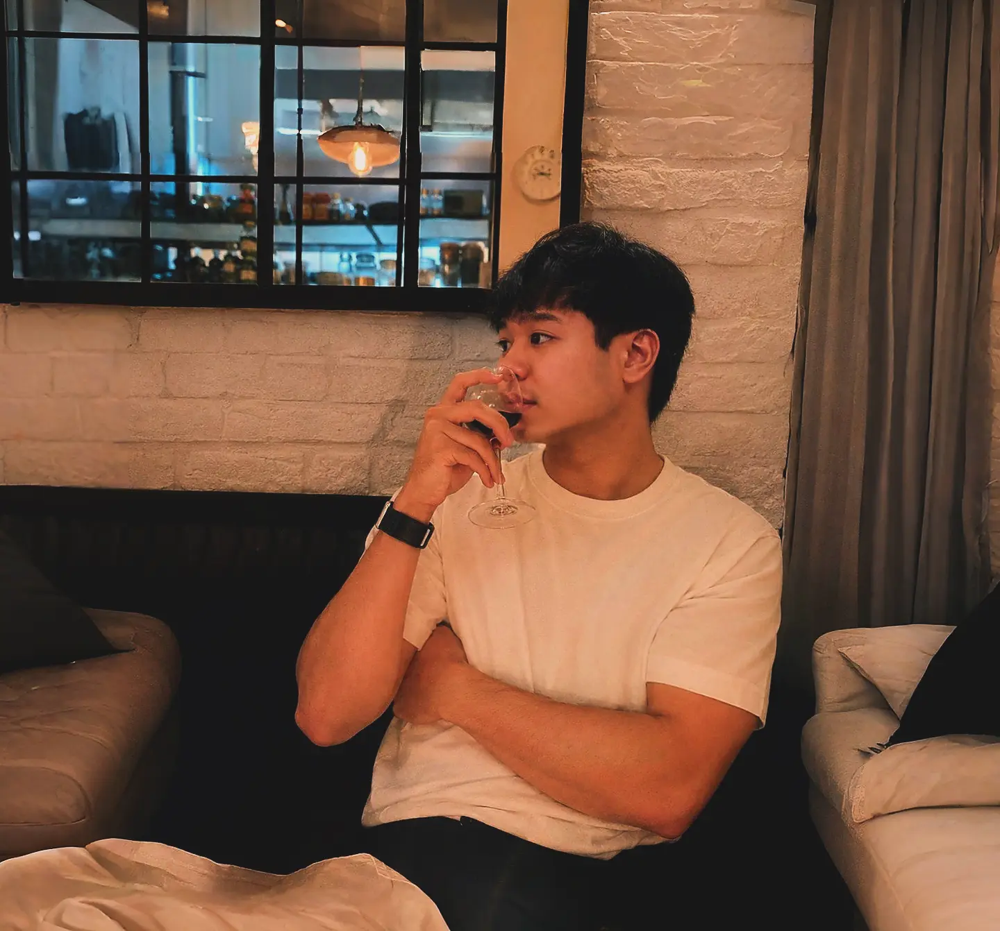

✧˖°. step in to carlos' corner! (>ᴗ<) ｡𖦹°‧
character information:

⌞ᨳ stats⭑.ᐟ ଓ⌝
strength5/5
intelligence5/5
charisma5/5
ragebait!!!999/5
personal background ── .✦
a third-year IT student from uste currently taking network security! certified social butterfly and professional ragebaiter (totoo ba 'yun!)
warning!!!
looks like a bully (real e2) but an actual softie when you talk to him! he likes to joke around but is straightforward and can caught u off guard with his replies! p.s. if you ever get ragebaited, try to one up him by annoying him back (•̀ᴗ•́)و ̑̑one thing to note about him? he's a gentle person! he has this calming aura that makes every conversation special. he can go yap all day and you'll probably find yourself listening the whole time! just make sure na you'll respect his boundaries and also be gentle to him too. he has gone too many heartbreaks so handle him w/ care! (╥﹏╥)
fun facts about him !! ¯╮(￣▽￣"")╭
- larper (proof na hindi or totoong fact talaga ito.)
- hobbymaxxing (soon to be piano gods shea)
- ACTUAL good taste in music!!!
- cancel material (may iconic catchphrase pa 'yan)
- NAPAKAKULET AT NAKAKAINIS (in a good way :p)
- 5'6 (pero pinakapogi 'yan sa kanila!)
how would you describe carlos?sunshine-coded pero bully, softie pero yapper! but most of all, admirable. Within that tough, extroverted exterior, is a gentle and genuine person that I relate a lot with. He's enigmatic in the sense na the conversation will literally bounce from one topic to another!!! it's funny but I also find it wholesome :D I could probably listen to his stories all day because I don't think I'll ever get bored abt it! He's friendly, super caring, and vv understanding as a person. I can also see na he's trying to do his best everyday and I wish he could remember these positive qualities about him whenever his insecurities would loom, kasi he's doing more than enough and I super duper admire him for his efforts! Carlos, if this is just the surface version of you that I could only see of the moment, then I hope it never changes!! u are perfect just the way u are. c:
trivia corner ── .✦
Summary
congrats if nakaabot ka sa part na 'to! honestly i'm not even expecting if mababasa 'to ng intended recipient ko BUTTT make sure to check the other pages too! - ai